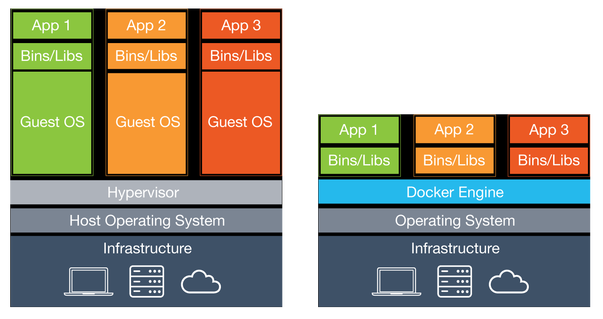

Introduction à Docker 🐳
Avant de parler de Docker, il faut déjà que j'explique ce qu'est un "container".
Les containers
Aujourd'hui, dans tous les domaines de l'informatique, la virtualisation s'impose comme une technologie prédominante et ce quelque soit le domaine. Mais faire tourner des systèmes d'exploitation entiers sur un ordinateur ou un serveur s'avère très couteux en terme de ressources. C'est (entre autre) pour pallier à ce problème qu'ont été inventés les "containers".
En termes techniques, les containers sont semblables aux machines virtuelles, à la majeure différence que certaines fonctionnalités du kernel sont communes au système hôte ainsi qu'à tous les containers, alors que chaque machine virtuelle possède son propre kernel.
De façon imagée, les machines virtuelles (à gauche) ont toutes un système d'exploitation, assez lourd, ainsi que les applications à faire tourner sur la machine virtuelle. Un container (à droite) ne va que faire tourner l'application dans son propre environnement isolé.
Pour coordonner le tout, les machines virtuelles utilisent un hyperviseur (tel que VMWare, Virtualbox ou Hyper-V). Les containers utilisent eux un "engine", comme par exemple Docker.
Docker
Docker est donc un logiciel permettant l'exécution de programmes dans des containers. Il a été créé par Solomon Hykes et il est aujourd'hui écrit en Go à travers un programme devenu standard industriel pour les containers, appelé containerd. Ce dernier est maintenu par plus de 200 contributeurs sur Github. En gros, containerd est le composant "bas-niveau" sur lequel se base l'application exécutable Docker. Voici le lien vers le guide d'installation (en anglais).
La façon de faire de Docker est relativement simple et elle l'est d'autant plus si vous avez déjà utilisé des machines virtuelles. Tout d'abord, il vous faut une "image". Il s'agit grossièrement d'un équivalent aux "images disques" d'une machine virtuelle, car elle contient les fonctionnalités de base du container. Un fonctionnalité très pratique de Docker est qu'il est possible de récupérer des images sur Internet, à travers le Docker Hub. Par exemple, pour récupérer une image d'Ubuntu dans sa version 19.10 :
# docker pull ubuntu:19.10
Et voilà, vous avez une image d'Ubuntu sur votre PC ! Pour la lancer, il vous faut juste faire la commande suivante :
# docker run -it ubuntu:19.10
Il faut donc juste préciser le nom de l'image. L'option "it" permet d'ouvrir un terminal et de le garder ouvert. On se retrouve avec un prompt comme celui-ci :
root@2f72aecaf471:/#
Depuis ce terminal, on peut exécuter de commandes qui seront exécutées dans le container. Pour en sortir, il faut faire la commande "exit" ou alors Ctrl+C.
Une fois sorti du container, on peut lister tous les containers créés par Docker :
# docker ps -a
CONTAINER ID IMAGE COMMAND CREATED STATUS PORTS NAMES
2f72aecaf471 ubuntu:19.10 "/bin/bash" 3 minutes ago Exited (0) 2 minutes ago quizzical_ride
On remarque que notre container est arrêté, tout simplement parce que chaque container possède une commande d'entrée qui, si elle est stoppée, arrête le container. Pour notre exemple, il s'agit de la commande "/bin/bash", soit le shell bash dans lequel nous étions précédemment.
Docker Hub
J'en ai parlé rapidement précédemment, le Docker Hub est sans aucun doute un énorme avantage de Docker. Il vous permet de récupérer des images facilement sur Internet et il est nourri par la communauté. Cela fait qu'il est possible de trouver des images de tout et n'importe quoi dessus. Imaginons par exemple que vous voulez faire un serveur web Apache. Sur votre PC, il aurait fallu installer Apache, ses dépendances, gérer les configurations et les ports si le port 80 est déjà utilisé... Mais il existe sur le Docker Hub une image Apache vous permettant de lancer rapidement un serveur web ! Il suffit de faire :
# docker run -d -p 8000:80 -v my-website/:/var/www/html httpd
Et c'est tout ! Pour expliquer les options : "-d" permet de lacer le container en mode détaché, pour le laisser tourner en arrière-plan. "-p 8000:80" permet d'assigner le port 8000 de la machine hôte au port 80 du container car par défaut, aucun port ouvert par le container ne le sera sur la machine hôte. Enfin, "-v my-website/:/var/www/html" permet d'assigner le dossier my-website/ de la machine hôte au dossier /var/www/html sur le serveur Apache. On remarque aussi que l'on a pas utilisé la commande "docker pull" pour l'image, tout simplement parce que vu que Docker n'a pas trouvé l'image localement, il est directement allé la chercher sur le Docker Hub. Docker fournit aussi une syntaxe logique pour toutes les assignations entre hôte et container, à savoir que ce sera toujours sous la forme "hôte:container".
Ce petit serveur web est donc maintenant accessible à l'adresse http://localhost:8000 !
Il faut savoir qu'avec des fichiers appelés "Dockerfile", il est possible de construire soit-même des images et de les publier sur le Docker Hub. J'en parlerais plus en détail dans un futur article, tout comme des fonctionnalités plus avancées comme docker-compose et docker-swarm ! En attendant, vous pouvez profiter du peu de reste de ce site :D